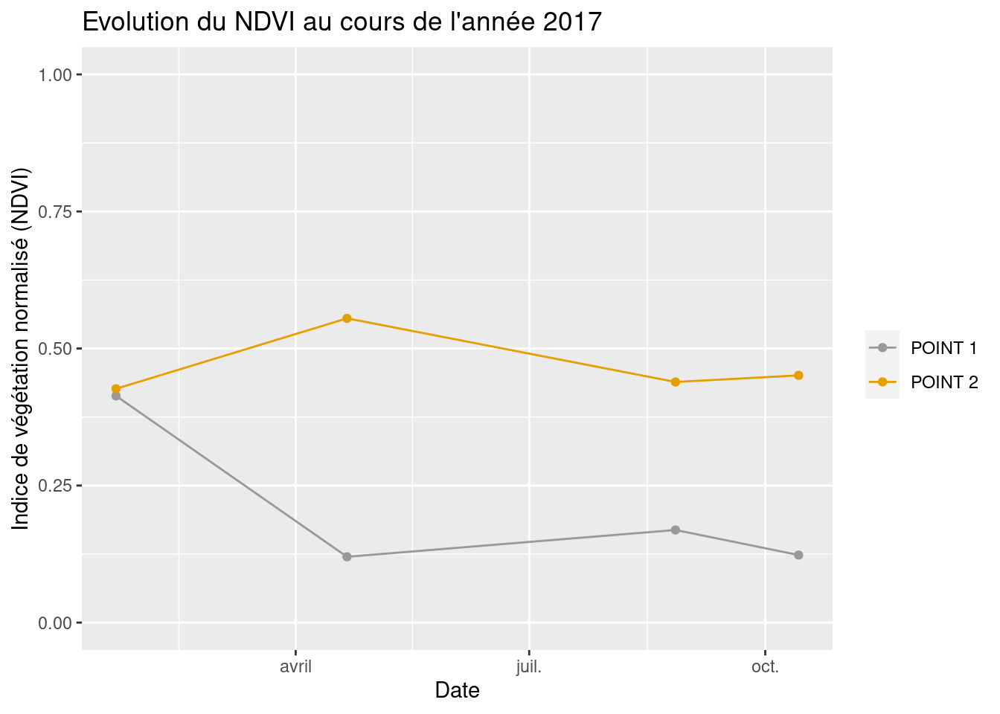

Travaux dirigés réalisés par Olivier Gillet et Yvette Vaguet
Objectifs du TD n°2
- Apprendre à utiliser la calculatrice raster
- Réaliser un début d’analyse diachronique sur la zone d’étude
- Faire le lien entre la théorie (signatures spectrales), les indicateurs et les cartographies thématiques
Le TD va se dérouler en 4 temps :
1 - Télécharger les données sur la plateforme Universitice
2 - Continuer de prétraiter les données (réaliser un layerStack pour chaque scène)
3 - Visualiser les images sous QGIS
4 - Exercice
Prétraitements sous R
Ce bout de code R a pour objectif de découper toutes les images satellitaires de ce TD.
⚠️ C’est seulement un exemple pour illustrer les multiples avantages de la programmation en Géographie.
start.time <- Sys.time()
for (d in c('01_JANVIER','04_AVRIL','08_AOUT','10_OCTOBRE')){
setwd(paste0("/home/gilleol2/Bureau/L8_BREST/",d,"_2017_L8_BREST"))
filesList <- list.files(pattern = ".TIF")
ze = sf::st_read("/home/gilleol2/Bureau/L8_BREST/ze.shp", quiet=T)
for(r in filesList){
raster_best = raster::raster(r)
raster_best_crop = raster::crop(raster_best,ze)
raster::writeRaster(raster_best_crop,paste0(tools::file_path_sans_ext(r),'_clip.TIF'),
options=c('TFW=YES'),overwrite=TRUE)
}
}
end.time <- Sys.time()
time.taken <- end.time - start.time
cat("Temps d'execution ==>",time.taken)Temps d'execution ==> 5.751721Au final, il me faut 5 minutes pour écrire le script R et 5 secondes pour découper 20 images satellitaires situées dans 4 répertoires différents. Ce prétraitement vous permet de manipuler des objets moins lourds pour votre machine.
En plus du gain de temps, les avantages de la programmation en Géographie sont multiples :
- Chaîne des traitements (simples ou complexes)
- Automatisation de certaines tâches
- Réexécution du code
- Création de nouvelles fonctionnalités
R comme Python permettent de s’affranchir des softs classiques (ArcGis, Grass, Qgis, GVSig, Idrisi, Erdas) et de réaliser des chaînes de traitements plus ou moins complexes sans SIG ou logiciel de traitement d’images en utilisant certaines librairies comme GDAL/OGR et autres … Vous verrez cela en Master si vous continuez à Rouen 👨🎓
1 - Télécharger les images Landsat 🛰
Vous devez vous rendre sur Universitice et télécharger le jeu de données à télécharger est le suivant :
TD 2 - Donnees L8 (2017, 4 scènes)
Le jeu de données est composé de plusieurs scènes Landsat 8, 4 scènes acquises en 2017. Vous disposez seulement de 5 bandes spectrales pour chaque scène.
Pour rappel, les images satellitaires se caractérisent par une information panchromatique, multi- ou hyper-spectrales. Le nombre de bandes spectrales et les intervalles de longueur d’onde de ces dernières diffèrent selon le satellite et les capteurs utilisés. Les bandes spectrales à disposition sont les suivantes :
| Instrument embarqué n°1 - OLI | ||
| Bande spectrale n°2 - Bleu | 0.450 - 0.515 µm | 30 m |
| Bande spectrale n°3 - Vert | 0.525 - 0.600 µm | 30 m |
| Bande spectrale n°4 - Rouge | 0.630 - 0.680 µm | 30 m |
| Bande spectrale n°5 - Infrarouge proche | 0.845 - 0.885 µm | 30 m |
| Instrument embarqué n°2 - TIRS | ||
| Bande spectrale n°10 - Infrarouge à grande longueur d’onde | 10.30 - 11.30 µm | 100 m |
📆 Les dates d’acquisition des images satellitaires sont les suivantes :
- 22 janvier 2017
- 21 avril 2017
- 27 août 2017
- 14 octobre 2017
2 - “LayerStacker” chaque scène 💻
Vous devez regrouper les 5 bandes spectrales de chaque scène, réaliser un “LayerStack” des bandes. pour rappel, un objet de plusieurs bandes est plus facile à manipuler que plusieurs objets d’une seule bande spectrale.
Raster -> Divers -> Construire un rasteur virtuel
⚠️ N’oubliez pas de cocher l’option “Place each input file into a separate band”
Le fichier créé par l’outil est format .vrt. Exporter ce fichier dans un autre format, en .tif.
Clic droit sur l’image -> Exporter -> Enregistrer sous …
Vos scènes doivent avoir les noms suivants :
- 01_JANVIER_2017_L8_BREST_CLIP_ALL_BANDS
- 04_AVRIL_2017_L8_BREST_CLIP_ALL_BANDS
- 08_AOUT_2017_L8_BREST_CLIP_ALL_BANDS
- 10_OCTOBRE_2017_L8_BREST_CLIP_ALL_BANDS
4 scènes avec 5 bandes spectrales en format .tif
3 - Visualiser l’image 💻
En pseudo-couleur (vraie couleur)
Clic droit sur l’image -> Propriétés -> Symbologie -> Type de rendu -> Couleurs à bandes multiples
Vous devez réaliser une composition colorée “vraies couleurs” pour chaque scène.
- La bande 4 en rouge, la bande 3 en vert, la bande 2 en bleu (4R, 3V, 2B ou 4, 3, 2)

Image satellite dans QGIS en pseudo-couleur naturelle
4 - Calculer mon premier indice 🧮
Les images satellitaires sont des images numériques que l’on peut exploiter à travers des traitements statistiques ou mathématiques afin de calculer des indicateurs. Le calcul de ces indicateurs est un processus impliquant la manipulation, via la calculatrice matricielle, d’une ou de plusieurs bandes spectrales. Ici, nous allons calculer, sur plusieurs images de la même région prises à des temporalités différentes (données multi-temporelles), divers indicateurs mathématiques. Ces indicateurs, issus de méthodes d’analyses statistiques et/ou des combinaisons arithmétiques de canaux/bandes spectrales, permettront de synthétiser ou d’extraire certaines caractéristiques peu visibles sur les canaux radiométriques d’origine, en variables thématiques ayant une réelle signification.
Nous commençons par calculer un indice élémentaire, le RVI ou le Ration Vegetation Index (Krieger et al., 1969), en calculant le rapport en deux bandes spectrales. La végétation réfléchit fortement dans le proche infrarouge et absorbe fortement dans la portion du rouge visible.
\(DVI = PIR/ROUGE\)
❓ Vous devez réaliser le rapport spectral entre les bandes spectrales du Rouge et PIR sur la zone d’étude pour chaque scène.
Raster -> Calculatrice Raster
Calcul du RVI avec la calculatrice raster de QGIS
Affichage du RVI dans QGIS
💹 Les valeurs supérieures à 1 correspondent à de la végétation alors que les valeurs proches de 1 sont les surfaces en eau ou les sols nus.
5 - Etude de la végétation 🌲
L’indice de végétation normalisé (Normalized Difference Vegetation Index)
\(NDVI = (PIR-ROUGE)/(PIR+ROUGE)\)
- [0,+1[ Surfaces végétalisées avec activités chlorophyllienne
- [-1,0[ Surfaces en eau ou humide
- 0 Sols nus
Autres indices pour l’étude de la végétation: WDVI (Weighted Difference Vegetation Index), PVI (Perpendicular Vegetation Index), SAVI (Soil-Adjusted Vegetation Index) , TSAVI (Tranformed Soil-Adjusted Vegetation Index), EVI (Enhanced Vegetation Index)
❓ Vous devez réaliser le calcul du NDVI sur la zone d’étude pour chaque scène.
Raster -> Calculatrice Raster
Affichage du NDVI dans QGIS
6 - Etude des sols ⛰
L’indice de brillance (Brightnes Soil Index)
\(BSI = \sqrt{(ROUGE^{2} + PIR^{2})}\)
Cet indice donne une information sur “l’albédo” des sols de la zone d’étude. Celui-ci caractérise, via le taux d’humidité des sols, le niveau de brillance pour chaque pixel. Nous pouvons ainsi déduire si une surface est humide ou sèche. Les valeurs de l’indice sont exprimées en pourcentage. Un pourcentage élevé indique une brillance forte. Par exemple, un sol labouré à une brillance moindre.
Autres indices pour différencier les sols: NDSI (Normalized Difference Soil Index), Indice de cuirasse (plus pertinent que BSI)
❓ Vous devez réaliser le calcul du BSI sur la zone d’étude pour chaque scène.
Raster -> Calculatrice Raster
Affichage du BSI dans QGIS
7 - Etude des surfaces hygrophiles 🌏
Le Normalized Difference Water Index (NDWI)
\(NDVI = (ROUGE-MIR)/(ROUGE+MIR)\)
- Valeurs négatives (sols nus et non cultivés)
- Valeurs positives (surfaces cultivées et/ou végétalisées)
- valeurs maximales (surfaces en eau)
⚠️ Vous ne pouvez pas calculer cet indices, il vous manque la bande spectrale du MIR.
Autres indices pour étudier les surfaces hygrophiles : Indice d’irrigation, DWV (Difference Water Vegetation
8 - Exercice 📊
❓ Vous devez tracer la courbes présentant l’évolution de deux indicateurs (NDVI et du BSI) au cours de l’année 2017 et sur 5 points différents de la zone d’étude.
Affichage des 4 NDVIs dans QGIS
📊 Voici un exemple de résultat attendu
